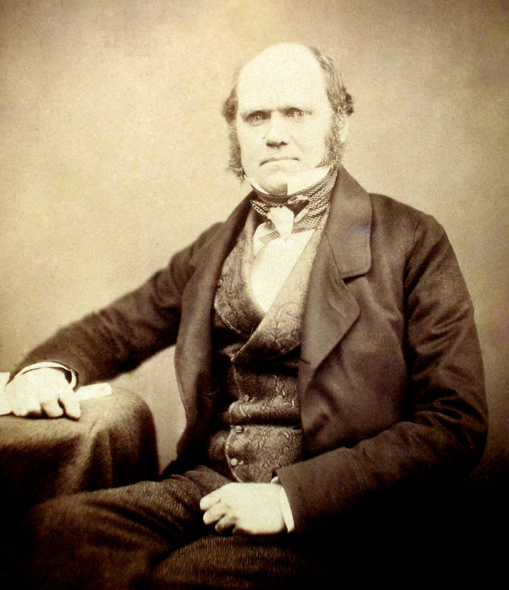
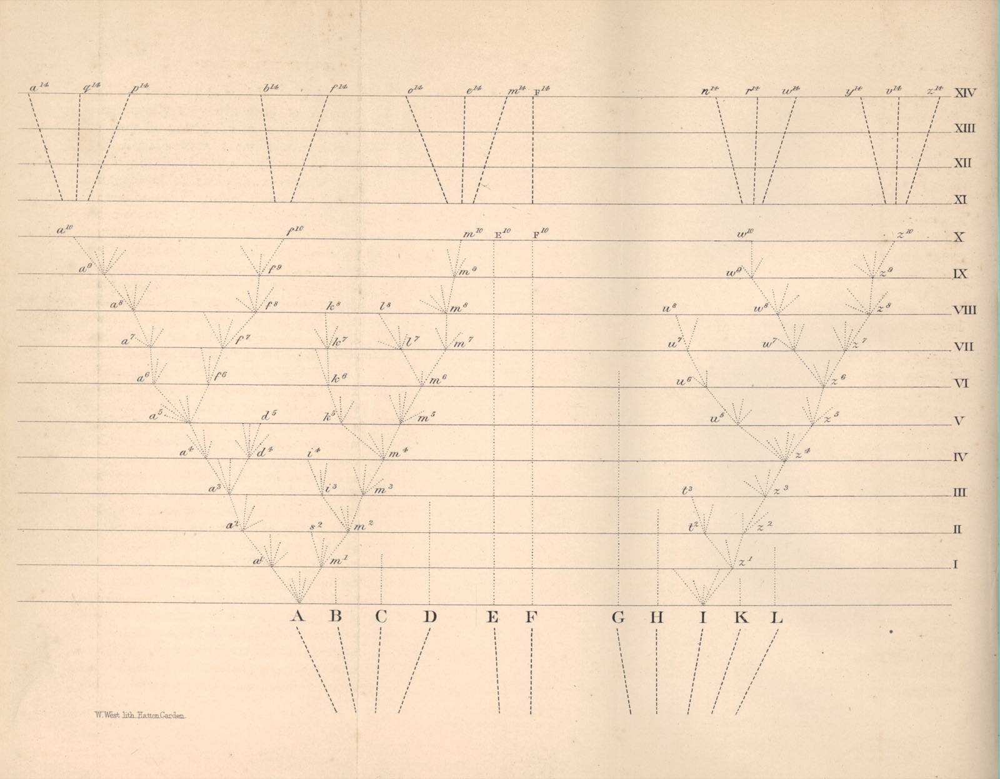

Darwin could explain how inherited differences accumulate while admitting that the laws of inheritance were “quite unknown.” Breeders could select among differences they saw in their animals. He asked whether something similar could happen in the wild.
William Paley’s Natural Theology (1802) compares an eye to an optical instrument: parts fitted to a purpose imply a maker who understood it. Darwin proposes that useful structures can develop without anyone anticipating the result. Some offspring inherit differences that help them reproduce; those differences can spread across generations.
The Origin joins this account of adaptation to a second claim: species descend from earlier species. Common ancestry helps explain shared structures and the grouping of species into families. Darwin calls natural selection the main means of change, while allowing others. Introduction, pp. 3-6; chapter I, p. 13. Paley’s comparison is in chapter III (1809 edition).

Eight stops through the 1859 first edition follow. Later editions and modern findings are identified separately. Use the arrows or stop menu to move through them.
Stop 1 / Domestication
What pigeon breeders can change
Chapter I, Variation under Domestication
Altogether at least a score of pigeons might be chosen, which if shown to an ornithologist, and he were told that they were wild birds, would certainly, I think, be ranked by him as well-defined species.
The fantail has thirty or forty tail feathers where an ordinary pigeon has twelve or fourteen. The pouter inflates an enormous crop, a pouch in its throat. The short-faced tumbler has a tiny beak. Darwin argues that these strikingly different breeds descend from the rock-pigeon, Columba livia, rather than from separate wild species. He points to fertile crosses between breeds, the reappearance of ancestral markings, and the absence of the supposed wild ancestors.
Breeders choose which birds reproduce, accumulating features that were initially slight. Some work toward a specified result; others keep the birds they prefer without planning the breed’s eventual form.
The breeds show how inherited variation can support substantial change. They remain domestic varieties. Darwin still has to explain why some variants leave more descendants outside the pigeon loft. Chapter I, pp. 20-36.
Stop 2 / The struggle for existence
Survival and leaving offspring
Chapter III, Struggle for Existence
I should premise that I use the term Struggle for Existence in a large and metaphorical sense, including dependence of one being on another, and including (which is more important) not only the life of the individual, but success in leaving progeny.
A plant may release a thousand seeds, yet only a few establish themselves. Even the slow-breeding elephant’s descendants would multiply enormously if all survived and reproduced. Darwin uses these examples to show potential increase, not to establish a death rate for every species.
Darwin applies Malthus’s argument about population growth and limited resources to plants and animals. Population numbers cannot keep increasing unchecked. Drought or disease can check them, as can competition for food.
His mistletoe example makes the broad meaning of struggle clear. It needs a host tree and birds to carry its seeds. Success depends partly on attracting a bird. Living a long time without offspring is not enough. Chapter III, pp. 62-65.
Stop 3 / Natural selection
Natural selection has no intention
Chapter IV, Natural Selection
This preservation of favourable variations and the rejection of injurious variations, I call Natural Selection.
Suppose individuals with a particular inherited difference leave more offspring, on average, than others in the same population. Their descendants can make up a growing share of later generations. Further variation permits further change. Selection works on existing differences; need alone cannot supply a useful feature.
Darwin sometimes writes as though natural selection examines and chooses. He is personifying a process with no intention or knowledge of a future advantage. A coat that helps in one climate can be a burden in another.
Immediately after the definition, Darwin leaves neutral variations outside selection. In chapter VI he denies that selection necessarily produces absolute perfection. The advantage is relative to other available forms, under existing conditions. Chapter IV, pp. 81-84; chapter VI, p. 206.
When “survival of the fittest” entered the book
Herbert Spencer introduced the phrase in 1864. Wallace urged Darwin to use it in 1866, partly because readers mistook selection for a conscious choice. Darwin adopted it in the fifth edition, 1869, p. 72. It is absent from the first edition.
Fitness, in modern biology, concerns relative reproductive success. Strength matters when it helps that success. The phrase supplies no moral rule for deciding who deserves care.
Stop 4 / Common descent
Descent, divergence, and classification
Chapter IV, the Tree of Life
As buds give rise by growth to fresh buds, and these, if vigorous, branch out and overtop on all sides many a feebler branch, so by generation I believe it has been with the great Tree of Life, which fills with its dead and broken branches the crust of the earth, and covers the surface with its ever branching and beautiful ramifications.
Darwin calls the larger process descent with modification. Descendants differ from their ancestors; lineages can diverge and others disappear. His diagram explores how diverging descendants could occupy different places in the same environment. Isolation can preserve differences; interbreeding can work against them.
Naturalists disagree over borderline cases between species and varieties, and reproductive sterility is not an infallible test. Darwin argues that their differences need not belong to wholly separate kinds of change. Chapter II, pp. 48-52; chapter VIII, pp. 245-248.

Common descent explains why species fall into groups within groups. A human hand, a bat’s wing, and a porpoise’s paddle use corresponding bones for different tasks. Darwin reads their shared arrangement as an inheritance from a common ancestor. Classification can therefore record relationships. Chapter XIII, pp. 420-421 and 434-435.
He later extends the possibility to all life, calling a single primordial ancestor an inference from analogy and warning that analogy can mislead. The diagram represents species within one genus. Chapter XIV, pp. 483-484.
Stop 5 / A difficult organ
How an incomplete eye can help
Chapter VI, Difficulties on Theory
To suppose that the eye, with all its inimitable contrivances for adjusting the focus to different distances, for admitting different amounts of light, and for the correction of spherical and chromatic aberration, could have been formed by natural selection, seems, I freely confess, absurd in the highest possible degree.
Yet reason tells me, that if numerous gradations from a perfect and complex eye to one very imperfect and simple, each grade being useful to its possessor, can be shown to exist; if further, the eye does vary ever so slightly, and the variations be inherited, which is certainly the case; and if any variation or modification in the organ be ever useful to an animal under changing conditions of life, then the difficulty of believing that a perfect and complex eye could be formed by natural selection, though insuperable by our imagination, can hardly be considered real.
The second sentence sets conditions: intermediate structures must work and vary heritably, and a change must provide an advantage. Selection cannot preserve an otherwise useless intermediate because of a future advantage.
Darwin compares simpler light-sensitive structures with more elaborate eyes in living animals, particularly crustaceans. These suggest that useful gradations are possible. The actual history would lie in an animal’s ancestors, which are usually unavailable. A living species with a simpler eye is not thereby an ancestor.
A modern optical model by Dan-E. Nilsson and Susanne Pelger (1994, pp. 53-58) makes a narrower test. Starting with a light-sensitive patch, it constructs small changes toward a lens eye, with each step improving spatial resolution. The model demonstrates a possible route for the optics under its assumptions. It does not reconstruct a particular lineage or explain the initial origin of light-sensitive cells.
Stop 6 / Geology
Time and the missing fossil record
Chapter IX, On the Imperfection of the Geological Record
He who can read Sir Charles Lyell's grand work on the Principles of Geology, which the future historian will recognise as having produced a revolution in natural science, yet does not admit how incomprehensibly vast have been the past periods of time, may at once close this volume.
Darwin estimates how long erosion took to remove rock from the Weald in southern England: 306,662,400 years, rounded to three hundred million. The apparent precision exceeds what his assumptions can support. He offers lower alternatives in 1860 and removes the calculation in 1861. The changes at p. 287; third-edition corrections.
Where are all the intermediate forms? Darwin calls the lack of a finely graduated fossil sequence a grave difficulty. Sediment accumulates intermittently, much is lost, and little has been examined. His explanation for an incomplete record still leaves many transitions unobserved. Chapter IX, pp. 280 and 287-302.
Later, William Thomson, known as Lord Kelvin, challenged the available time using Earth’s cooling. His model omitted heat transport by convection in the interior. The familiar story that radioactive heat alone overturned it is too simple; England, Molnar, and Richter explain the distinction (2007, pp. 4-9).
Modern radiometric dating puts Earth’s age at about 4.54 billion years. Darwin could not measure that timescale. It does not validate his estimate for the Weald.
Stop 7 / What was missing
Heredity and the limits of the book
Chapter XIV, a question deferred
Light will be thrown on the origin of man and his history.
Darwin observes inheritance but lacks a satisfactory mechanism for it. A difficulty follows if heredity always blends parental differences into an average: repeated crosses can dilute a rare useful difference. But his observations also include traits that reappear after generations, and he does not consistently treat inheritance as simple blending.
In 1868 he proposes pangenesis: body parts shed tiny hereditary units, called gemmules, that gather in the reproductive organs and can remain dormant. He presents this as provisional. This proposed mechanism has not survived. Variation of Animals and Plants under Domestication, volume II, chapter XXVII, pp. 357 and 374-375.
Gregor Mendel’s pea experiments, published in 1866, showed patterns of inheritance in which a character can disappear from view and reappear in later offspring. There is no evidence Darwin knew his work. Mendel’s results did not immediately supply an explanation of every continuously varying trait. Fairbanks’s research on their relationship and the NHGRI account of Mendel’s findings explain the limits.
Modern genetics distinguishes a trait from the inherited DNA variants, called alleles, that help produce it. The variants can persist when parents’ contributions combine. Many traits depend on several genes and the environment. Evolution also includes genetic drift, changes in the frequency of variants through chance. Those findings belong to later science. Darwin also accepts inherited effects of use and disuse, a further difference from the modern account. Chapter V, pp. 134-139.
The Origin leaves its human implications largely undeveloped. Darwin addresses them directly in The Descent of Man (1871). His later social views complicate any defense of Darwin against political uses of his name. In chapter V, pp. 168-169, he fears harmful hereditary consequences from preserving weak people, while insisting that deliberately neglecting the helpless would cause a certain and great present evil. He also hopes that those he calls weak will refrain from marrying. Both views are his.
Turning reproductive success into a moral entitlement requires an additional argument. Natural selection supplies no instruction to abandon the poor or sick.
Stop 8 / The close
Endless forms most beautiful
Chapter XIV, excerpts from the closing paragraph
It is interesting to contemplate an entangled bank, clothed with many plants of many kinds, with birds singing on the bushes, with various insects flitting about, and with worms crawling through the damp earth, and to reflect that these elaborately constructed forms, so different from each other, and dependent on each other in so complex a manner, have all been produced by laws acting around us.
There is grandeur in this view of life, with its several powers, having been originally breathed into a few forms or into one; and that, whilst this planet has gone cycling on according to the fixed law of gravity, from so simple a beginning endless forms most beautiful and most wonderful have been, and are being, evolved.
The bank brings together two parts of the argument: organisms have histories, and their ways of living depend on one another. Darwin proposes that ordinary processes, extended across generations, can account for their adaptations and relationships.
Useful structure can develop without an intended end. Descent and selection, however, begin with reproducing organisms. This book leaves the first origin of life unexplained.
The ending changes in 1860
The second edition adds three words, “by the Creator,” after “breathed.” The variorum at p. 490 shows the change. The first edition already refers to laws impressed on matter by the Creator, at p. 488.
In a letter to Hooker dated by its editors to 29 March 1863, Darwin regrets his biblical language of creation and says he meant that life appeared by an unknown process. The editors identify a phrase on p. 484 as the target of this regret, rather than the revised ending.
Sources and edition
The passages use Darwin’s English from the first edition of On the Origin of Species, published by John Murray on 24 November 1859. Page numbers refer to that edition. Quotations were checked against Darwin Online’s F373 transcription, with the struggle, eye, and final sentence also compared to the scans. Omissions are labelled.
- Edition changes. Darwin Online’s variorum, edited by Barbara Bordalejo, supports the Weald calculation and revised ending. The fifth edition and Wallace letter support the history of “survival of the fittest.”
- Later science. The eye model, NHGRI genetics explanations, and USGS dating account are linked where used. They are later evidence or models.
- Images. The 1859 diagram and Maull & Polyblank portrait are public domain. The source record dates the photograph to 1855.


This guide covers selected arguments.